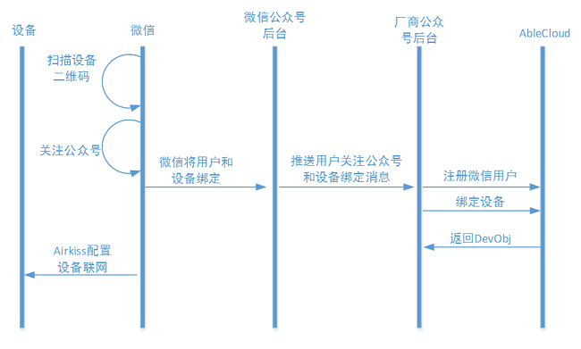
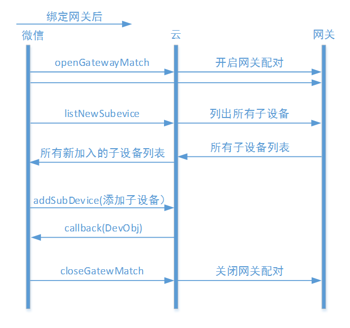

微信客户端开发指导
开发准备
开发者首先需要申请开通带设备功能的微信公众服务号。请参考开发指导-第三方云对接-微信。
在AbleCloud提供的PHP语言的微信公众号SDK中，类ACBridgeWeChat封装了AbleCloud与微信同步用户、用户与设备的绑定关系，及设备工作状态的方法；类ACClient及其关联类则封装了AbleCloud云端服务的API。 本文档中的代码示例均以PHP语言为例。PHP SDK的API详细说明请参见SDK下载包中附带的文档。
开发微信公众号功能时，开发者应按照其在AbleCloud平台注册的开发者帐号信息，修改PHP SDK提供的配置文件ACConfig.php中的配置项。
帐号管理
帐号注册
对AbleCloud平台来说，微信用户是来自第三方平台的用户。可以使用微信用户的OpenID在AbleCloud平台中注册用户。 该操作一般在用户关注公众号时执行。此时，微信平台会向开发者的微信公众号后台推送用户关注公众号的事件，开发者可以在收到该事件时完成用户的注册。
// 实例化ACAccountService对象
$accountServcie = ACClient::getAccountService();
// 参数$openId是微信用户的OpenID；'weixin'用于标记第三方用户来自微信平台。
$user = $accountServcie->registerByOpenId($openId, 'weixin');
用户登录
对AbleCloud平台来说，微信用户是来自第三方平台的用户。可以使用微信用户的OpenID登录AbleCloud平台。 该“登录”操作的目的一般是获取用户在AbleCloud平台对应的帐号信息，以方便通过AbleCloud平台提供的接口访问云端或设备提供的服务。
通过ACBridgeWeChat类直接登录，获取ACUser对象。
// 实例化ACBridgeWeChat对象
// 参数$accessToken是微信公众号的Access Token。注意：微信的Access Token的有效期是有期限限制的。
$wxBridge = new ACBridgeWeChat($accessToken);
// 使用用户的OpenID登录
$user = $wxBridge->getUser($openId);
通过ACCountService提供的方法登录，获取ACUser对象。
// 实例化ACAccountService对象
$accountServcie = ACClient::getAccountService();
// 使用微信用户的OpenID登录。参数$openId是微信用户的OpenID；'weixin'用于标记第三方用户来自微信平台。
$user = $accountService->getUserByOpenId($openId, 'weixin');
绑定手机号
缺省情况下，AbleCloud平台只能获取用户的微信OpenID信息。关于用户的其它信息需要开发者或用户额外提供。 如为安全起见，可以验证并绑定用户的手机。
1.向用户的手机发送验证码
// 获取账号管理对象
$accountServcie = ACClient::getAccountService();
// 发送验证码
// 参数$phone为字符串，是用户的手机号。
$accountServcie->sendVerifyCode($phone);
2.根据验证码绑定用户的手机
// 实例化ACBridgeWeChat对象
// 参数$accessToken是微信公众号的Access Token。注意：微信的Access Token的有效期是有期限限制的。
$wxBridge = new ACBridgeWeChat($accessToken);
// 提交验证码，绑定手机号
// 参数$verifyCode是字符串，表示用户修改手机号码的验证码。
// 参数$openId为字符串，是微信用户的OpenID,开发者需要参考微信官方文档去获取OpenID。
$wxBridge->setPhone($openId, $phone, $verifyCode)；
用户帐号的扩展属性
获取用户帐号的扩展属性
// 实例化ACAccountService对象
$accountService = ACClient::getAccountService();
// 获取用户的扩展属性
$keyValues = $accountService->getUserProfile($user);
设置用户帐号的扩展属性
设置帐号的扩展属性之前，应通过开发者管理控制台定义帐号的扩展属性列。
// 实例化ACAccountService对象
$accountService = ACClient::getAccountService();
// 设置帐号的扩展属性。扩展属性以键值对组成的关联数组保存，记为$profile。
$accountService->setUserProfile($user, $profile);
获取用户的微信OpenId
在已知用户在AbleCloud平台上的ID的条件下，可以获取用户在微信平台上对应的OpenId。
通过ACBridgeWeChat类提供的方法获取用户的OpenID。
// 实例化ACBridgeWeChat对象
$wxBridge = new ACBridgeWeChat($accessToken);
// 获取用户的OpenID
$openId = $wxBridge->getUserOpenId($userId);
通过ACCountService类提供的方法获取用户的OpenID。
// 实例化ACAccountService对象
$accountService = ACClient::getAccountService();
// 获取用户的OpenID。参数$userId是用户在AbleCloud平台上的ID；'weixin'用于标记第三方用户来自微信平台。
$openId = $accountService->getUserOpenId($userId, 'weixin');
设备管理
说明参见功能说明-设备管理
独立设备
设备绑定的交互流程如下图所示：

设备绑定
1.微信设备授权及设备二维码
参考微信硬件平台-设备授权对硬件设备进行授权。
授权完成后调用微信硬件平台-获取设备二维码接口获取设备的二维码。PHP SDK也封装了该接口，其调用方式如下：
// 实例化ACBridgeWeChat对象
$wxBridge = new ACBridgeWeChat($accessToken);
// 获取设备的二维码串
$qrCode = $wxBridge->getDeviceQRCode($physicalId, FALSE, $openId);
// 之后可使用相关工具将码串转换为二维码图片。
2.处理用户扫描二维码的事件
微信用户扫描设备的二维码后，微信公众号平台会向厂商的公众号后台推送两条事件消息："event"-"subscribe"及"device_event"-"bind"，分别表示用户关注公众号，以及用户绑定了指定设备。 如果用户之前已经关注过公众号，则仅推送第二条消息。
处理事件"event"-"subscribe"：
// 实例化ACBridgeWeChat对象
$wxBridge = new ACBridgeWeChat($accessToken);
$user = $wxBridge->onEventSubscribe($xmlMsg); // $xmlMsg是微信推送的完整XML消息内容。
// 其它处理逻辑
方法ACBridgeWeChat::onEventSubscribe实现的主要功能是识别用户的OpenID，将该用户注册为AbleCloud用户，实现与微信的用户信息同步。
处理事件"device_event"-"bind"：
// 实例化ACBridgeWeChat对象
$wxBridge = new ACBridgeWeChat($accessToken);
$device = $wxBridge->onDeviceEventBind($xmlMsg, $deviceName, FALSE); // $xmlMsg是微信推送的完整XML消息内容。
// 其它处理逻辑
方法ACBridgeWeChat::onDeviceEventBind实现的主要功能是识别用户及设备信息，在AbleCloud平台中同步用户与设备的绑定关系。
AbleCloud将第一个绑定设备的用户作为该设备的管理员用户。其他用户只能在管理员用户的授权下才能绑定该设备。管理员可以提供设备的分享码，允许其它用户绑定设备。这个分享码可以作为附加属性附属在微信的原始设备二维码中方便用户扫码提取。 方法ACBridgeWeChat::onDeviceEventBind能自动处理用户扫描包含/不包含分享码的设备二维码来绑定设备的情况。
设备激活
此处，“设备激活”是指为WIFI设备配置WIFI网络，使设备连网，连接云端，从而提供在线服务能力。
对于接入微信硬件平台的设备，可以调用微信的AirKiss页面配置设备的WIFI网络。 在手机连上WIFI的情况下，在AiKiss页面输入WIFI密码，等待设备连接网络。AirKiss的具体信息请参考微信硬件平台文档。
设备分享
设备分享是指以设备的管理员用户的身份调用AbleCloud平台的接口生成设备的分享码，其它用户凭借该分享码绑定设备。
// 实例化ACBridgeWeChat对象
$wxBridge = new ACBridgeWeChat($accessToken);
// 获取包含分享码的二维码串
$qrCode = $wxBridge->getDeviceQRCode($physicalId, TRUE, $openId, 300);
// 将码串$qrCode转换为二维码图片。其他用户使用微信扫描该二维码就可绑定设备。
设备解绑
在AbleCloud平台及微信平台中同步解除用户与设备的绑定关系。
// 实例化ACBridgeWeChat对象
$wxBridge = new ACBridgeWeChat($accessToken);
// 解邦设备
$wxBridge->unbindDevice($openId, $physicalId, FALSE);
方法ACBridgeWeChat::unbindDevice实现的主要功能是在AbleCloud平台及微信平台中同步解除用户与设备的绑定关系。
网关型设备
绑定网关
网关的绑定操作流程和独立设备是一样的，如下图：
绑定网关设备的实现过程也与独立设备一致，只是最后调用方法ACBridgeWeChat::onDeviceEventBind的参数不一样。
1.微信设备授权及设备二维码
参考微信硬件平台-设备授权对硬件设备进行授权。
授权完成后调用微信硬件平台-获取设备二维码接口获取设备的二维码。PHP SDK也封装了该接口，其调用方式如下：
// 实例化ACBridgeWeChat对象
$wxBridge = new ACBridgeWeChat($accessToken);
// 获取设备的二维码串
$qrCode = $wxBridge->getDeviceQRCode($physicalId, FALSE, $openId);
// 之后可使用相关工具将码串转换为二维码图片。
2.处理用户扫描二维码的事件
微信用户扫描设备的二维码后，微信公众号平台会向厂商的公众号后台推送两条事件消息："event"-"subscribe"及"device_event"-"bind"，分别表示用户关注公众号，以及用户绑定了指定设备。 如果用户之前已经关注过公众号，则仅推送第二条消息。
处理事件"event"-"subscribe"：
// 实例化ACBridgeWeChat对象
$wxBridge = new ACBridgeWeChat($accessToken);
$user = $wxBridge->onEventSubscribe($xmlMsg); // $xmlMsg是微信推送的完整XML消息内容。
// 其它处理逻辑
方法ACBridgeWeChat::onEventSubscribe实现的主要功能是识别用户的OpenID，将该用户注册为AbleCloud用户，实现与微信的用户信息同步。
处理事件"device_event"-"bind"：
// 实例化ACBridgeWeChat对象
$wxBridge = new ACBridgeWeChat($accessToken);
$device = $wxBridge->onDeviceEventBind($xmlMsg, $deviceName, TRUE); // $xmlMsg是微信推送的完整XML消息内容。
// 其它处理逻辑
方法ACBridgeWeChat::onDeviceEventBind实现的主要功能是识别用户及设备信息，在AbleCloud平台中同步用户与设备的绑定关系。其第三个参数用来标记该设备是否为网关设备。
网关激活
网关设备的激活方法与独立设备一致。
分享网关设备
分享网关设备的实现方式与独立设备一致。
绑定子设备
网关绑定成功以后，绑定子设备的流程如下图：

总体来说，其步骤是：
-
开启网关接入功能；
-
查询新接入的子设备；
-
绑定新接入的子设备；
-
关闭网关接入功能。
代码示例如下：
// 实例化ACDeviceService
$deviceService = ACClient::getDeviceService();
// 开启网关接入功能
$deviceService->openGatewayMatch($gatewayId, $user, $timeout);
// 列举网关设备上新接入的子设备（尚未绑定）
$newSubDevices = $deviceService->listNewSubDevicesFromGateway($user, $gatewayId);
// 绑定新子设备
foreach ($newSubDevices as $dev) {
$deviceService–>addSubDeviceToGateway($user, $gatewayId, $dev->getPhysicalId(), $name);
}
// 关闭网关接入功能
$deviceService ->closeGatewayMatch($gatewayId, $user);
设备解绑
1.解绑网关
解绑网关设备的过程与解绑独立设备一致，只是最后调用方法ACBridgeWeChat::unbindDevice的参数不一致。
// 实例化ACBridgeWeChat对象
$wxBridge = new ACBridgeWeChat($accessToken);
// 解邦网关设备
$wxBridge->unbindDevice($openId, $physicalId, TRUE);
方法ACBridgeWeChat::unbindDevice第三个参数用于标记所操作的设备是否为网关设备。
2.解绑子设备
解绑子设备是指从网关设备中删除子设备。
// 实例化ACDeviceService
$deviceService = ACClient::getDeviceService();
// 解邦子设备
$deviceService–>deleteSubDeviceFromGateway($user, $subDeviceId)
Home模型
针对微信公众号这种应用环境，在Home模型下，创建“Home”、“Room”并绑定设备的交互流程与Android设备的流程几乎一致，可参考Android设备的Home模型。
创建Home及Room
// 实例化ACDeviceService对象
$deviceService = ACClient::getDeviceService();
// 创建名字为$homeName的Home
$home = $deviceService->createHome($user, $homeName);
// ......
// 创建名字为$roomName的Room
$room = $deviceService->createRoom($user, $home->ownerId, $roomName);
添加或移动设备到分组中
用户通过ACDeviceService::bindDevice或ACDeviceService::bindGateway方法绑定的设备可以通过ACDeviceService::addDeviceToHome添加至Home中。
在通过其它方法绑定设备之前，也可直接调用ACDeviceService::addDeviceToHome方法完成绑定、添加设备到Home中的操作。
只有Home中的设备才能通过ACDeviceService::moveDeviceToRoom方法将其添加至Room中。
添加设备到Home中：
// 实例化ACDeviceService对象
$deviceService = ACClient::getDeviceService();
// 添加设备到Home中：$homeId是Home的ID；$physicalId（设备的物理ID）或$deviceId（设备的逻辑ID）任意提供一个即可。
$device = $deviceService->addDeviceToHome($user, $homeId, $name, $physicalId, $deviceId);
在Home中移动设备到Room中：
// 实例化ACDeviceService对象
$deviceService = ACClient::getDeviceService();
// 移动Home中的设备到Room中
$deviceService->moveDeviceToRoom($user, $deviceId, $roomId, $homeId);
设备的扩展属性
获取设备的扩展属性
// 实例化ACDeviceService
$deviceService = ACClient::getDeviceService();
// 获取设备的扩展属性
$keyValues = $deviceService->getDeviceProfile($deviceId);
设置设备的扩展属性
设置设备的扩展属性之前，应通过开发者管理控制台定义设备的扩展属性列。
// 实例化ACDeviceService
$deviceService = ACClient::getDeviceService();
// 设置设备的扩展属性。扩展属性以键值对组成的关联数组保存，记为$profile。
$deviceService->setDeviceProfile($user, $deviceId, $profile);
和云端通信
访问云端服务
PHP SDK中的类ACClient定义了方法sendToService用于访问运行在AbleCloud云端的任意服务（包括开发者的UDS）的通用方法。但访问AbleCloud官方提供的云端服务时，可直接调用SDK中封装的API。 下文的代码示例是访问云端任意服务的通用方法。
// 实例化ACRequest对象
$request = new ACRequest($serviceName, $methodName, $serviceVersion);
// 设置参数：通过addParameter方法添加的参数，将以查询字符串的方式置于访问远程服务的URL中传递给远程服务。
$request->addParameter($key, $value);
// 设置参数：通过setPayloadAsJSON/setPayloadAsStream方法设置的数据是HTTP请求的Body。
// $request->setPayloadAsStream($binaryBody);
$request->通过setPayloadAsJSON($jsonText);
// 访问云端服务
$response = ACClient::sendToService($request);
// 其它处理逻辑
向设备发送消息
PHP SDK中的类ACDeviceService定义了方法sendToDevice用于向设备发送指令。该方法的使用示例如下：
// 实例化ACDeviceService对象
$deviceService = ACClient::getDeviceService();
// 向设备发送消息
// 参数$messageCode是整数，表示发送给设备的消息的码。
// 参数$message是拟发送给设备的二进制数据。
$response = $deviceService->sendToDevice($user, $deviceId, $messageCode, $message);
// 其它处理逻辑
定时任务
添加定时任务
// 实例化ACTimerTaskService对象
$timerTaskService = ACClient::getTimerTaskService();
// 配置定时任务
$task = new ACTimerTask();
// 设置$task的属性
// ......
// 向云端添加任务
$timerTaskService->addTask($task, $user);
查询定时任务列表
// 查询已配置的定时任务的列表
$tasks = $timerTaskService->listTasks($user, $deviceId);
启动定时任务
// 查询已配置的定时任务的列表，从中找到要启动的定时任务，记录其ID。
$tasks = $timerTaskService->listTasks($user, $deviceId);
// 找到要启动的任务的ID，记为$taskId。
// 启动该任务
$timerTaskService->startTask($user, $deviceId, $taskId);
停止定时任务
// 查询已配置的定时任务的列表，从中找到要停止的的定时任务，记录其ID。
$tasks = $timerTaskService->listTasks($user, $deviceId);
// 找到要停止的任务的ID，记为$taskId。
// 停止该任务
$timerTaskService->stopTask($user, $deviceId, $taskId);
修改定时任务
// 查询已配置的定时任务的列表，从中找到要修改的的定时任务，记录其ID。
$tasks = $timerTaskService->listTasks($user, $deviceId);
// 找到要修改的任务的ID，记为$taskId。
// 配置该任务的新属性
$task = new ACTimerTask();
// 修改$task对象的属性值
// ......
// 修改任务
$timerTaskService->modifyTask($taskId, $task, $user);
删除定时任务
// 查询已配置的定时任务的列表，从中找到要删除的的定时任务，记录其ID。
$tasks = $timerTaskService->listTasks($user, $deviceId);
// 找到要删除的任务的ID，记为$taskId。
// 删除该任务
$timerTaskService->deleteTask($user, $deviceId, $taskId);
OTA
检查更新
// 实例化ACOtaService
$otaService = ACClient::getOtaService();
// 检查更新
$otaVersion = $otaService->checkUpdate($user, $deviceId);
$needUpdate = $otaVersion->canUpdate();
// $needUpdate为TRUE时表示云端发布了新版本的固件，可以执行升级。
确认升级
经过前述步骤查询得到可升级的固件版本时，用户可以选择是否升级。确认升级的示例代码如下：
// 将指定设备的固件升级为查询得到的新版本
$otaService->confirmUpdate($user, $deviceId, $otaVersion->getNewVersion());
消息推送
向用户的微信客户端推送消息可分两种情况：一种是用户打开公众号的HTML5页面时推送消息到HTML5页面；一种是直接推送消息到用户的微信客户端。现假设设备端监控到的实时数据触发了某一报警规则，需要向用户推送该消息。
第一种情况下，可利用HTML5页面的WebSocket技术实现消息的实时推送。具体流程是：
-
首先设备通过正常的上报数据的方式将数据上报给AbleCloud云端；
-
AbleCloud云端会选择开发者的UDS服务来处理设备上报的数据。在UDS处理该上报消息时，可以调用开发者的微信公众号后台提供的一个数据推送接口（Web服务），将消息推送给微信公众号后台；
-
开发者的微信公众号后台收到该消息后，识别目标用户，通过与用户正在浏览的HTML5页面之间的WebSocket连接将消息推送给页面，并由该页面及时显示出来。
第二种情况下，可利用微信公众平台提供的消息推送接口（微信公众平台-模板消息接口）向用户推送消息。具体流程是：
-
首先设备通过正常的上报数据的方式将数据上报给AbleCloud云端；
-
AbleCloud云端会选择开发者的UDS服务来处理设备上报的数据。在UDS处理该上报消息时，可以调用开发者的微信公众号后台提供的一个数据推送接口（Web服务），将消息推送给微信公众号后台；
-
开发者的微信公众号后台收到该消息后，识别目标用户，通过AbleCloud API获取用户的OpenID，调用微信公众平台的消息推送接口向用户推送消息。不过，微信公众平台的模板消息接口有调用频次的限制。
注：
-
上述两种情况下，“开发者的微信公众号后台提供的一个数据推送接口（Web服务）”是指开发者在其自己开发的微信公众号后台中实现的一个可被访问的RESTful接口。该接口可接收调用者传递的消息（如通过HTTP POST方法传递的消息），并执行相应的处理。
-
UDS调用微信公众号的数据推送接口时，涉及访问AbleCloud之外的远程服务，需要通过AbleCloud UDS SDK提供的专门访问远程服务的API来实现。